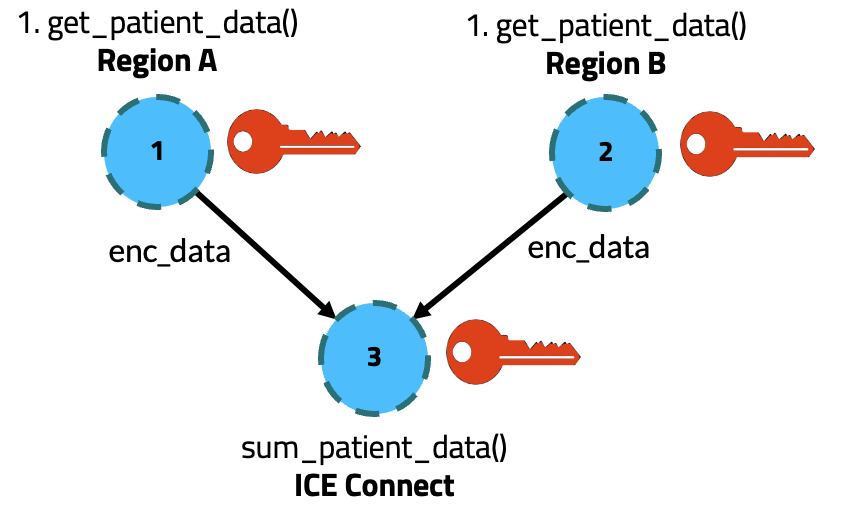
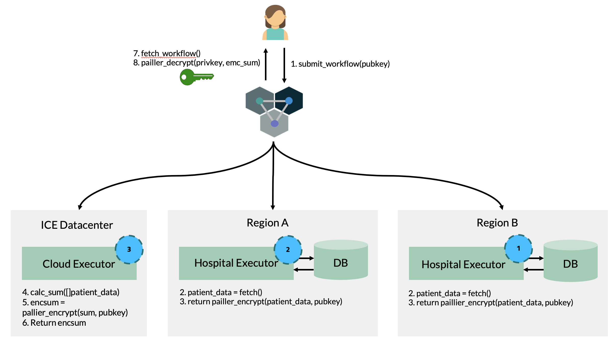
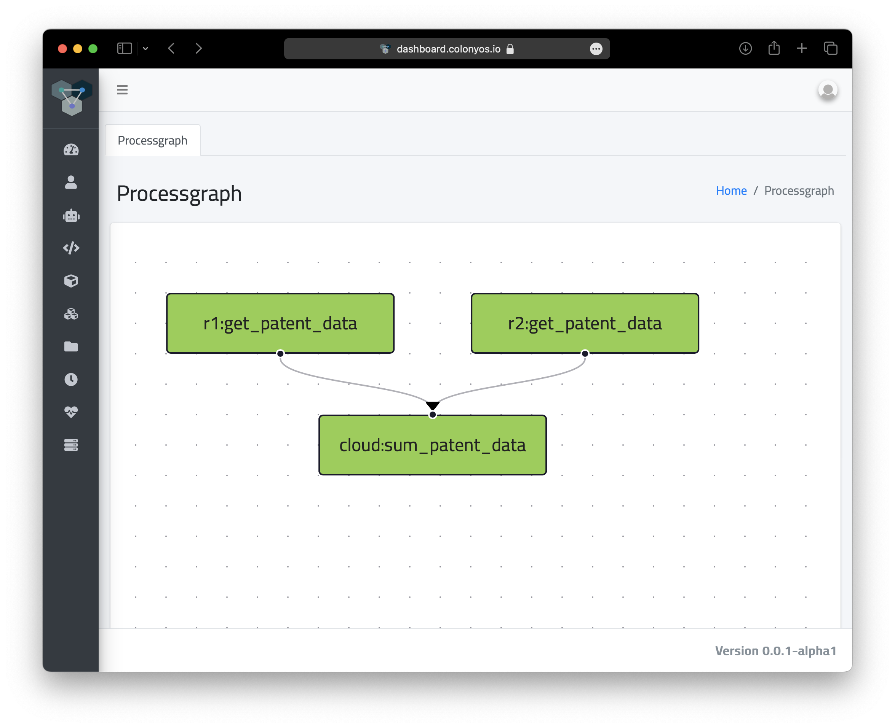
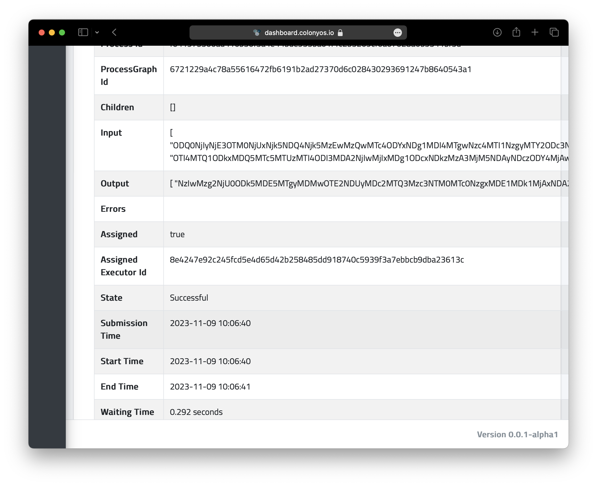

Getting started
TODO
Developing an executor
With a private key
Self-registration
Example - Cross-platform workflows
import os
import random
import pickle
import matplotlib.pyplot as plt
import random
import json
from termcolor import cprint
from pycolonies import Colonies
from pycolonies import colonies_client
from pycolonies import func_spec
from pycolonies import Workflow
colonies, colonyname, colony_prvkey, executorid, executor_prvkey = colonies_client()
def gen_sleep(executortype):
return {
"conditions": {
"executortype": executortype,
"nodes": 1,
"processes-per-node": 1,
"mem": "500Mi",
"cpu": "1000m",
"gpu": {
"count": 0
},
"walltime": 60
},
"funcname": "execute",
"kwargs": {
"cmd": "sleep 8",
"docker-image": "ubuntu:20.04"
},
"maxexectime": 55,
"maxretries": 3
}
wf = Workflow(colonyname)
wf.add(gen_sleep("ice-kubeexecutor"), nodename="ice-0", dependencies=[])
wf.add(gen_sleep("lumi-small-hpcexecutor"), nodename="lumi-0", dependencies=["ice-0"])
wf.add(gen_sleep("lumi-small-hpcexecutor"), nodename="lumi-1", dependencies=["ice-0"])
wf.add(gen_sleep("lumi-small-hpcexecutor"), nodename="lumi-2", dependencies=["ice-0"])
wf.add(gen_sleep("lumi-small-hpcexecutor"), nodename="lumi-3", dependencies=["ice-0"])
wf.add(gen_sleep("lumi-small-hpcexecutor"), nodename="lumi-4", dependencies=["ice-0"])
wf.add(gen_sleep("lumi-small-hpcexecutor"), nodename="lumi-5", dependencies=["ice-0"])
wf.add(gen_sleep("lumi-small-hpcexecutor"), nodename="lumi-6", dependencies=["ice-0"])
wf.add(gen_sleep("lumi-small-hpcexecutor"), nodename="lumi-7", dependencies=["ice-0"])
wf.add(gen_sleep("leonardo-booster-hpcexecutor"), nodename="leonardo-0", dependencies=["lumi-0", "lumi-1", "lumi-2", "lumi-3", "lumi-4", "lumi-5", "lumi-6", "lumi-7"])
# print(wf)
wf.add(gen_sleep("ice-kubeexecutor"), nodename="ice-1", dependencies=["leonardo-0"])
colonies.submit(wf, executor_prvkey)
Example - Secure Multi-party Computation
This is an example of how to use ColonyOS to execute cross-platform workflows for Secure Multi-party Computation. We will explore a use case that demonstrates Homomorphic encryption on medical data. The source code can be found here.
Let’s assume we have three sites:
Hospital (Region A
Hospital (Region B)
A cloud provider (ICE Connect).
The cloud provider should be able to execute certain mathematical operations (in this case calculate a sum) on the encryped patient data obtained from the both hospitals. With homomorphic encryption, the cloud provider only has access to encrypted data without ever accessing the actual, sensitive patient data.
Now, we aim to streamline the entire process of acquiring encrypted patient data from both hospitals, performing the sum computation, and then decrypting the final result. The computation we aim to perform can be represented as the following Directed Acyclic Graph (DAG):
We are going to utilize the Paillier homomorphic encryption protocol, which works as follows:
A user generate a private/public key pair.
The user sends the public key to the hospitals.
Each hospital retrieves patient data through database queries, encrypts this data using the provided public key. This ensures the confidentiality of the patient information.
Each hospital then sends the encrypted data to the cloud provider.
The cloud provider calculates a sum of the encrypted data — without ever decrypting it, thus preserving the privacy of the information.
The cloud provider sends the encrypted result back to the user.
Finally, the user decrypts the result using the private key to obtain the plaintext outcome of the computation.
This process is shown in the figure below:
We are going to develop two types of ColonyOS executors. 1. A Hospital executor, responbible for getting patient data. The hospital executor is going to provide a Colonies function called get_patient_data. 2. A Cloud executor, responisible for calculating the sum. The cloud provider is going to provide a Colonies function called sum_patient_data.
We are going the pass the Paillier enbcryption key through the DAG as an argument to the workflow. The JSON code below describes the DAG:
[
{
"nodename": "r1:get_patent_data",
"conditions": {
"executortype": "r1-hospital_executor",
"dependencies": []
},
"funcname": "get_patient_data",
"kwargs": {
"paillier-pubkey": "eyJuIjogIjQwNDI...."
},
"maxexectime": 600,
"maxretries": 3
},
{
"nodename": "r2:get_patent_data",
"conditions": {
"executortype": "r2-hospital_executor",
"dependencies": []
},
"funcname": "get_patient_data",
"kwargs": {
"paillier-pubkey": "eyJuIjogIjQwNDI...."
},
"maxexectime": 600,
"maxretries": 3
},
{
"nodename": "cloud:sum_patent_data",
"conditions": {
"executortype": "cloud-hospital-executor",
"dependencies": [
"r1:get_patent_data",
"r2:get_patent_data"
]
},
"funcname": "sum_patient_data",
"kwargs": {
"paillier-pubkey": "eyJuIjogIjQwNDI...."
},
"maxexectime": 600,
"maxretries": 3
}
]
Run the example
First, start the first Hospital executor. The first argument is the name of executor. The second argument is the secret patient data.
python3 hospital_executor.py r2-hospital_executor 5
Start the second Hospital executor.
python3 hospital_executor.py r1-hospital_executor 55
And finally start the cloud provider executor.
python3 cloud_executor.py
Submit the workflow.
colonies workflow submit --spec workflow/workflow.json
We can also look at the DAG in the ColonyOS dashboard.
 Note the input and out field of the last process in the DAG. The input field contains the encrypted patient data generated by the Hospital executors. The outout field contains the encrypted sum.
To get the result we need to decrypt the output from the last process in the DAG.
python3 decrypt.py 8e7823ff8d0f8a167480199d070a43a6ad88894a45137d3837f34789580d5035
The sum of all patient data is: 60
Paillier Homomorphic encryption in Python
from phe import paillier
# Sensitive medical data
private_data = {
'patient_data1': 15,
'patient_data2': 25
}
# Generate public and private keys for Paillier encryption
public_key, private_key = paillier.generate_paillier_keypair()
# Encrypt each site's private data using the public key
encrypted_data = [public_key.encrypt(value) for value in private_data.values()]
# The central authority sums the encrypted values
encrypted_sum = sum(encrypted_data, start=public_key.encrypt(0))
# The encrypted sum is then decrypted with the private key
total_sum = private_key.decrypt(encrypted_sum)
print(f"The sum of all site data is: {total_sum}")